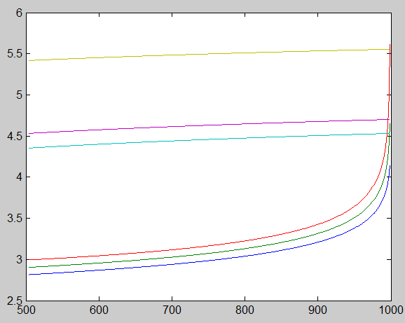

| Flexible Statistics Data Analysis Toolbox™ |
|
Bonferroni bounds of minimum Mahalanobis distance along the forward search
Bbound = FSMbonfbound(n,p)
Bbound = FSMbonfbound(Y,param1,val1,param2,val2,...)
Bbound = FSMbonfbound(n,p) computes the Bonferroni theoretical bounds of the minimum Mahalanobis distance for quantiles 1%, 50% and 99%.
n : scalar, number of observations
p : number of variables
Bbound = FSMbonfbound(n,p,val1,param2,val2,...) specifies one or more of the name/value pairs described in the following table.
| Parameter | Value |
|---|---|
| 'init' |
Scalar which specifies the initial subset size to compute the Bonferroni bound for minimum Mahalanobis distance, if init is not specified it will be set equal to init=floor(0.5*(n+p+1))+1. |
| 'prob' |
1-by-k vector containing quantiles for which Bonferroni bounds have to be computed. The default is to produce 1%, 50% and 99% envelopes. |
| 'distrib' |
String. The statistical distribution used to compute the approximated Bonferroni bounds. Distributions implemented are 'chi2' (default) and 'F'. |
n=1000; p=5; init=floor(0.5*(n+p+1))+1; MMDenv = FSMenvmmd(n,p,'exact',1,'init',init); Bbound = FSMbonfbound(n,p); figure; plot(MMDenv(:,1),MMDenv(:,2:end),Bbound(:,1),Bbound(:,2:end));The two curves are very different except for the last step.

|
|
fsmbbm.html | fsmeda.html |
|